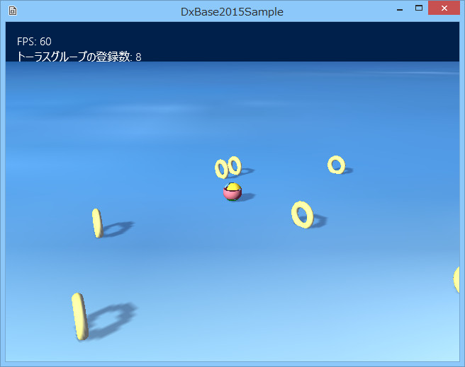

１０４．オブジェクトの動的な追加
オブジェクトの動的な追加とは
ゲーム中に登場するキャラクターは、ステージのクリエイト時に追加されるものばかりとは限りません。
ゲーム開始時は少しでも、ステージが進むにつれて、新しいキャラクターをどんどん登場させるゲームもあります。
この項と次項で、動的に追加する方法を紹介します。
この項では、文字通り
オブジェクトの追加です。
サンプル104では、簡単な例を紹介しています。Sample104ディレクトリ内のソリューションを開いてリビルドして実行すると以下のような画面が現れます。

図1004a
プレイヤーをコントローラで操作して、Bボタンを押してみましょう。黄色いトーラスが出現します。
これは、動的に
AddGameObject()テンプレート関数を呼び出します。
//Bボタンでトーラスを作成する処理
void Player::TorusCreateMotion(){
//トーラスの追加
//20個までトーラス追加できる
auto Group = GetStage()->GetSharedObjectGroup(L"RollingTorusGroup");
if (Group->size() < 20){
auto PtrTrans = GetComponent<Transform>();
auto TorusPtr = GetStage()->AddGameObject<RollingTorus>(PtrTrans->GetPosition());
Group->IntoGroup(TorusPtr);
}
}
赤くなっているところが追加する処理です。
TorusCreateMotion()はモーション関数なので、ステートから呼び出されます。追加後グループに登録しているのは、追加の上限を数えるためです。ここでは20個まで追加できるようになってます。
通常のオブジェクト（キャラクターなど）であればこの処理で問題ありません。増やしても限度があるでしょうから。しかし、増やしすぎると、モデルなどはリソースを使ったとしても、動きが鈍くなりますので気をつけましょう。
また、砲弾とか、攻撃する光線とか、大量に必要で、また、爆発後など消えてしまうものなどは、この方法だと無駄が多すぎます。
そんな場合は、次項の
１０５．砲弾などの動的な追加のような方法をとります。